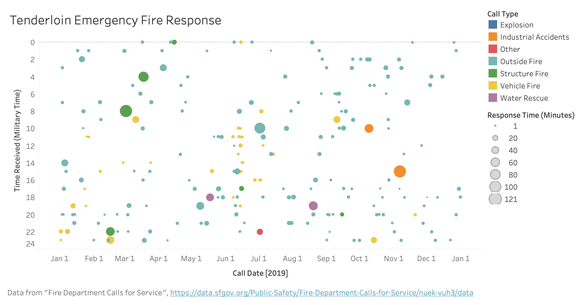

Call Type Group Trends for Each Neighborhood
Data Wrangling
I used the filter function on the SF Data website to filter on calls from the Tenderloin neighborhood, received during 2019 (received after 1/1/2019 12 AM, received before 1/1/2020 12 AM) where the call group type was fire, and the final priority was 3 (emergency). I used Tableau to extract the call date (MM/DD) from the Received Date column and used the DATEDIFF function to calculate the length (subtracting the call received time from the time the unit was available again).
Visualization Prototype
The Tenderloin has a reputation for being a bad neighborhood with a lot of emergency calls, as the other broader visualizations in this project will demonstrate. I wanted to drill down deeper into one neighborhood and look for any trends when these calls are happening (do they correlate with work hours? Are there more fires over the summer?) Depressingly, there were too many emergency medical calls, but when I filtered on fire calls in one neighborhood over one year, I got a much more manageable number of calls.
Most calls are outside fires and most of them are responded to pretty quickly. Vehicle fires similarly seem to be relatively minor (makes sense considering smaller size of vehicle). However, industrial accidents and structure fires seem to take longer, potentially over an hour, before the unit is free again.
Future Steps
I would like to add interactive functionality so that when you mouse over a particular bubble, a tooltip comes up with more information about that particular incident. It would also be cool if I could have a timeline slider (to show more years' data) or an option to select neighborhood, since I had to filter pretty heavily to create a manageable subset of data.